Inclusify
Visualizing racial microaggressions to raise awareness
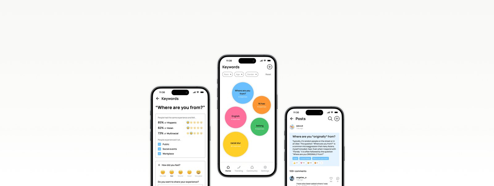
Racial microaggressions are difficult to detect due to their subtle nature.
Racial microaggressions are subtle, often unintentional, discriminatory comments that convey negative assumptions about a person’s race or ethnicity. These microaggressions contribute to unwelcoming environments for racial minorities. Compared to explicit racism, they often occur unintentionally and are harder to recognize, making them difficult to address.
Data visualization of people’s experiences.
This project began with the idea that raising awareness and fostering mutual understanding could help reduce microaggressions in everyday life. With this in mind, I sketched an online platform that allows users to report and visualize their experiences.
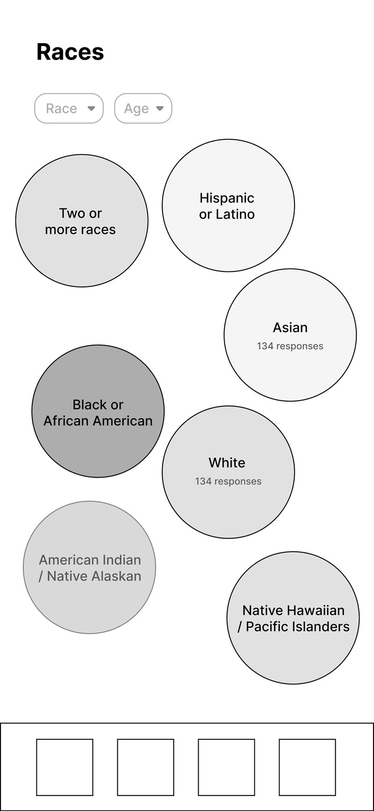
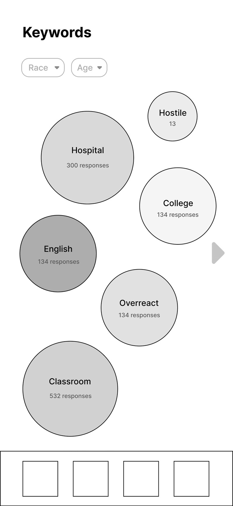
Gathering voices of diverse individuals.
I used a mixed-methods approach to gain a deeper understanding of people’s experiences with racism and microaggressions, as well as feedback on early sketches.
“In group projects, other team members didn’t give me a chance to present, pointing out my English. I thought about reporting it to the professor, but I was unsure whether he would understand my perspective.”
“As the community grows, it will be easier to challenge misconceptions and when things do not go well, I can always just retreat into the big black professional community.”
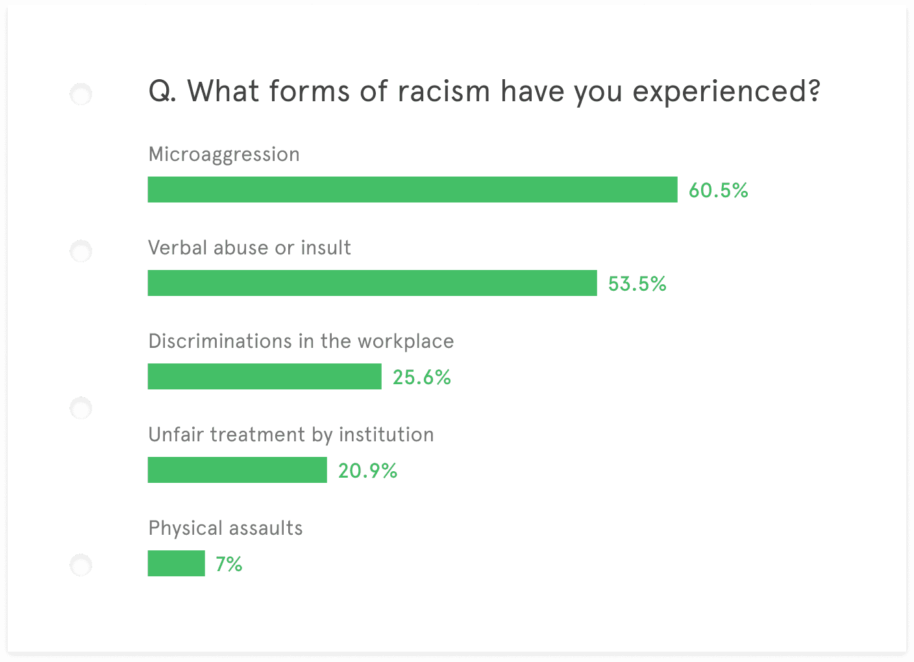
Between Option A (show keywords by race) and Option B (focus solely on keywords), participants preferred keeping the spotlight on the experiences themselves — so I moved forward with Option B.
Based on these findings, I defined the design requirements:
Inclusify, amplifying diverse voices.
Report and Assess
Collect more granular contexts around reported incidents to capture the subtle nuances of microaggressions.
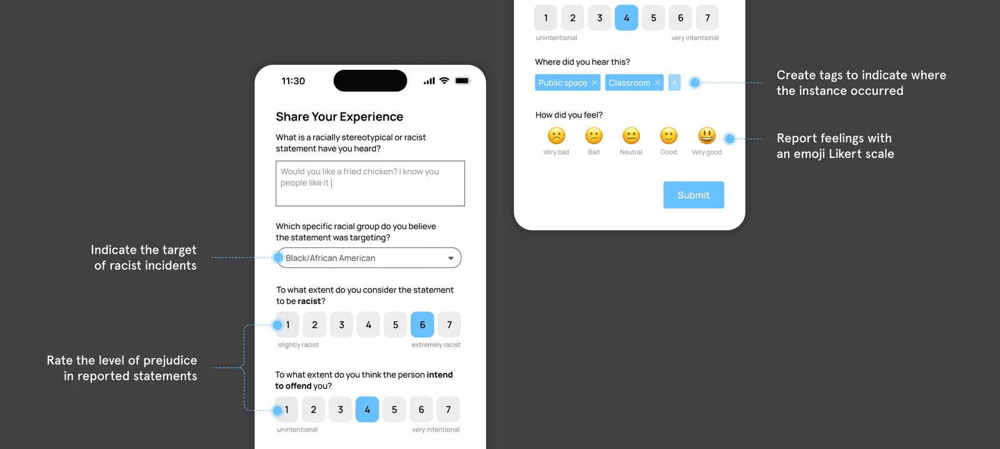
Word Cloud Visualization
Visualize people’s experiences as keyword bubbles extracted from user responses.
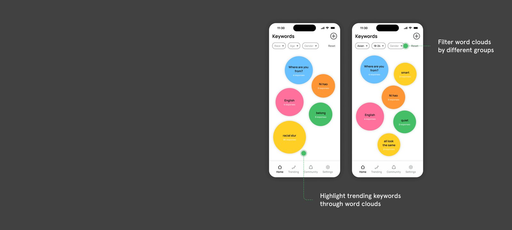
Summary and Insights
Deeper insights into others’ experiences for each keyword to foster understanding.
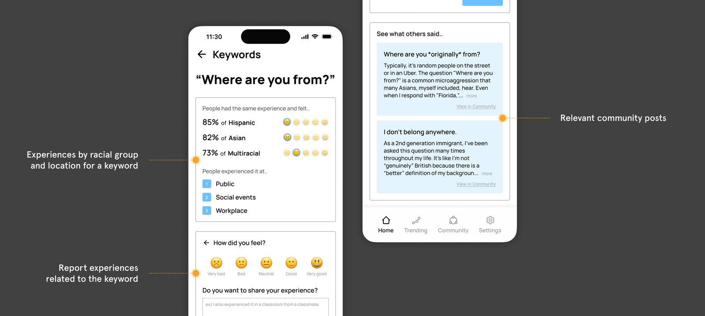
Community
Empathize and advocate for people across diverse backgrounds by creating meaningful connections.
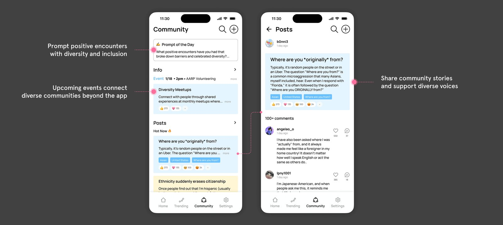
Assessing the impact of Inclusify.
I conducted online user tests with 26 participants to evaluate the effectiveness of Inclusify in enhancing public awareness and usability.
Initial evaluation of 5 prejudiced expressions.
Interact with Inclusify prototypes.
Reevaluation of the expressions, plus usability testing (SUS).
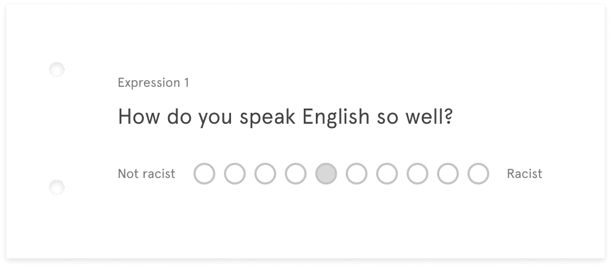
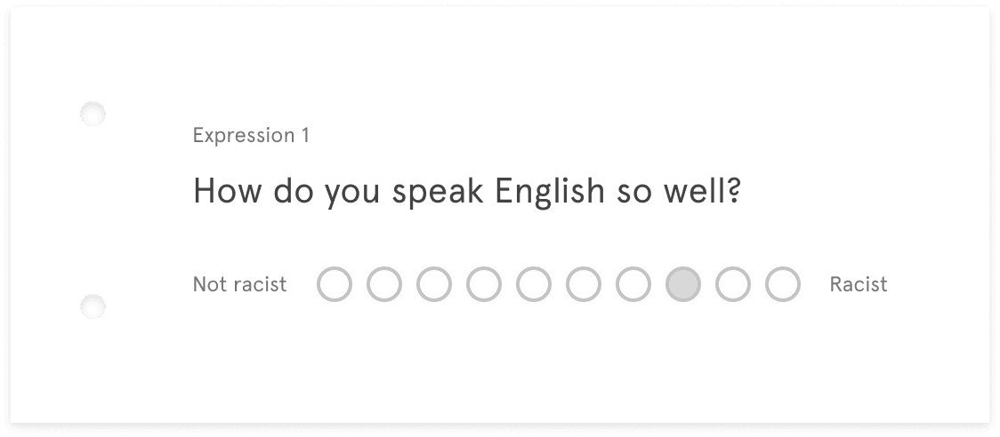
Inclusify enhanced awareness of racial microaggressions with a user-friendly experience.
“I think the app definitely helps with making people aware of different racial stereotypes and is a good place for people within marginalized communities to express frustrations.”
“This app will significantly help people recognize microaggressions in our daily lives.”
Also… this project was accepted to the 2024 CHI Student Design Competition.
Inclusify was selected as one of only 12 teams with a 28% acceptance rate. This was my first publication as a first author, and I had the opportunity to present it in Hawaii!
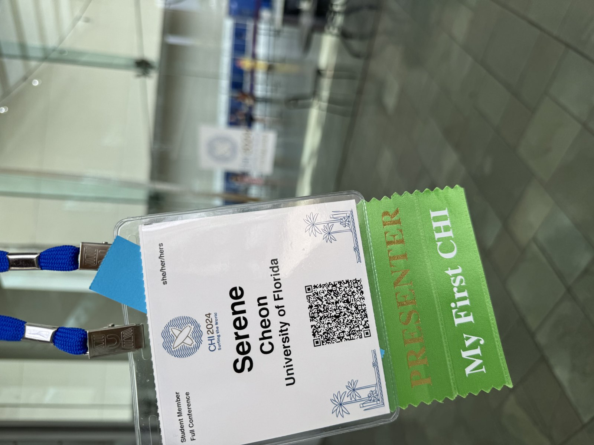
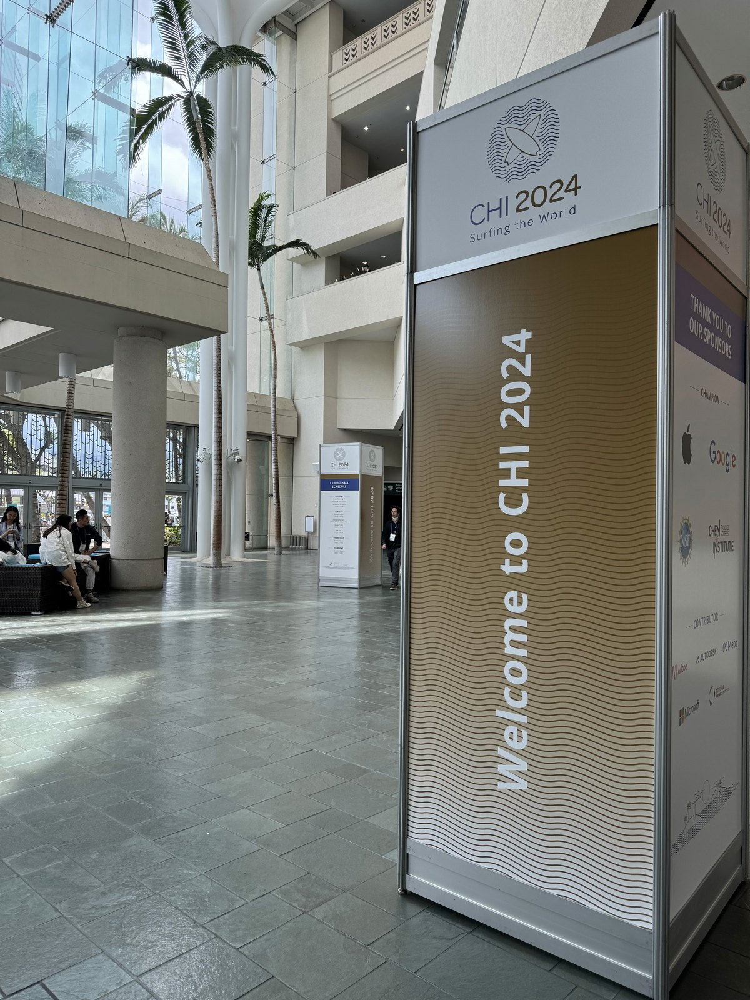
Check out the paper: Inclusify (CHI 2024 Student Design Competition) ↗
Through the survey, I found that participants preferred to focus on the experience itself. This insight was critical in identifying potential risks early and avoiding design choices that could unintentionally reinforce racial bias.